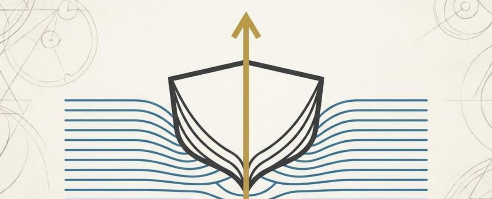

Historia y evolución
De las obras hidráulicas de la Antigüedad a la hidráulica digital: cómo cambiaron las preguntas, los instrumentos y los modelos.
Material del curso
148 diapositivas para recorrer la historia de la hidráulica, los principios fundamentales, las propiedades de los fluidos y las ecuaciones que sostienen el análisis de canales y tuberías.
Curso
La presentación abre con una pregunta sencilla: qué es la hidráulica y por qué su historia ayuda a entender las ecuaciones que usamos hoy. Después avanza hacia las propiedades de los fluidos, la hidrostática, la conservación de la masa y la energía, y los regímenes de flujo.
Está pensada como material de clase, no como un libro de texto. Cada bloque se puede usar por separado y las diapositivas finales conectan los conceptos con canales, tuberías y estructuras hidráulicas.
PDF · 148 diapositivas · 26 MB
Contenido
De las obras hidráulicas de la Antigüedad a la hidráulica digital: cómo cambiaron las preguntas, los instrumentos y los modelos.
Densidad, viscosidad, presión, empuje, Pascal, Bernoulli, continuidad y cantidad de movimiento, con su interpretación física.
Reynolds, Froude, flujo laminar y turbulento, subcrítico y supercrítico, y las consecuencias para el diseño.
Manning, tirante normal y crítico, resalto hidráulico, aforo y obras de conducción y disipación.
Lectura

Si el visor no carga en tu navegador, abre el PDF en una pestaña nueva.
Uso del material. Presentación elaborada para el curso de Hidráulica. Se comparte con fines educativos. Si alguna imagen requiere crédito o debe retirarse, escríbeme desde la página de contacto.
Si buscas una presentación, una guía o un conjunto de datos de un curso, escríbeme y lo revisamos.
Escribir